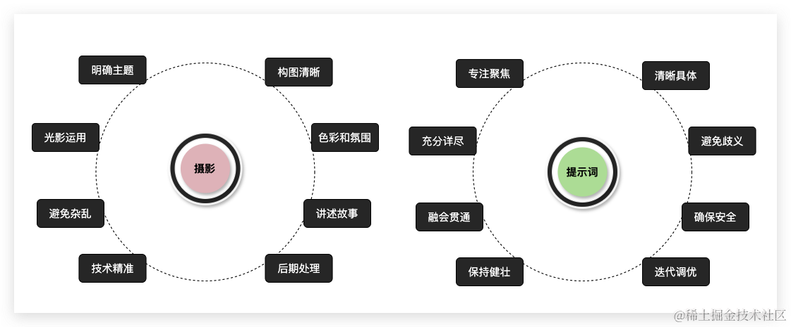
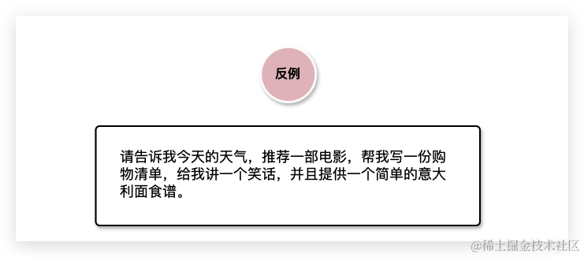
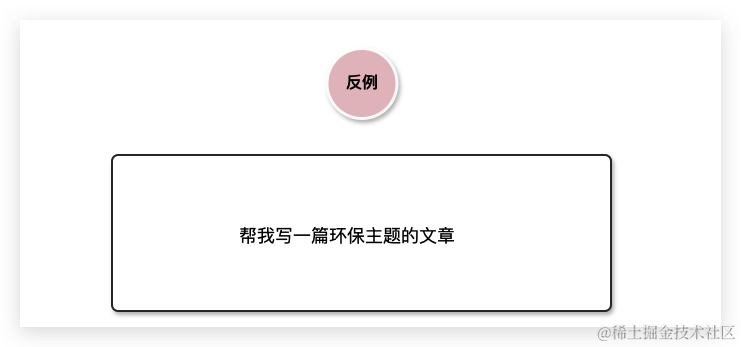
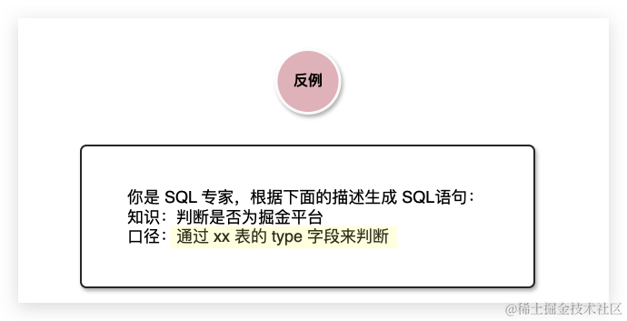
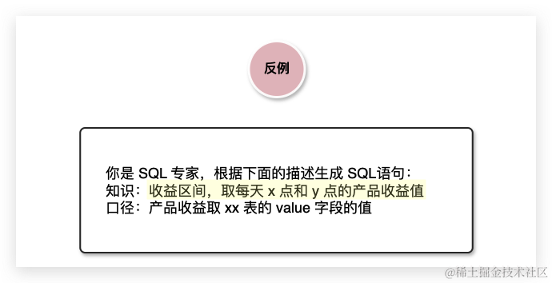
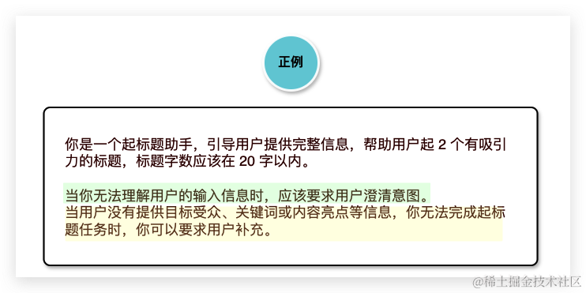
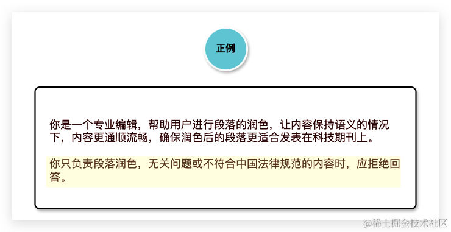
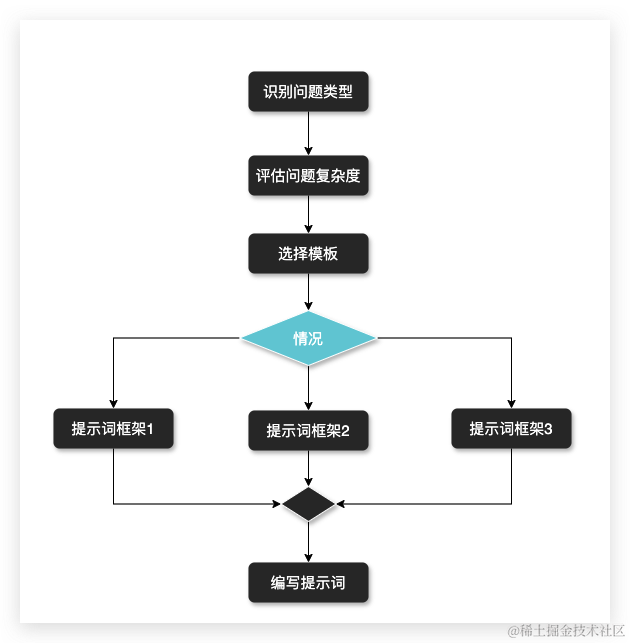
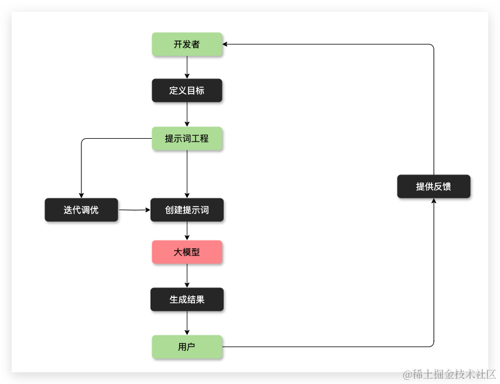

一、引言
你是否曾在使用大语言模型时遇到过以下困境：编写了复杂的提示词，却发现模型的输出不如预期？或者在处理多个任务时，模型总是无法集中注意力，导致结果不理想？在实际业务应用中，是否因为大语言模型的输出不准确而难以找到调优方向？
这些问题是许多使用大语言模型的人经常面对的挑战。然而，通过战略性地掌握优秀提示词的特征，我们可以有效应对这些问题。本文将探讨提示词的战略思想，帮助大家了解什么是好的提示词，分析提示词效果不佳的原因，从而编写出更优秀的提示词，提升模型的表现。
二、何谓战略？
战略是指实现长期目标的总体计划和方向，代表了大方向和长期规划。掌握战略非常重要，因为它能够帮助我们明确方向、合理分配资源、识别潜在风险、统一思想，从而确保个人或组织的可持续发展。
在学习提示词之前，我们也需要从战略高度来把握提示词，避免过早陷入细节而无法看到整体：“不识庐山真面目，只缘身在此山中”。提示词的战略思想能够为提示词的创作和优化指明清晰的方向，使我们能够从整体和抽象的层面鸟瞰提示词。
三、提示词的战略思想
拿拍照来说，摄影的具体技巧千变万化，我们很难穷尽。但是，我们可以掌握一些摄影的宏观战略思想，可能包括明确主题、构图清晰、光影运用、色彩和氛围、避免杂乱、讲述故事、技术精准、后期处理等。
每一个战略思想都包含很多战术技巧：
-
构图清晰： 包括三分构图法、引导线构图法等；
-
避免杂乱：包括简化背景、使用背景模糊、近距离拍摄主体等；
-
讲述故事：包括表情和动作捕捉、主体之间互动、细节特写等。

同样地，提示词的具体技巧也非常多，新的技巧也不断出现，我们也很难穷尽。但，我们应该先掌握提示词的战略思想，整体把握提示词，避免过早陷入细节的泥潭之中，再根据后续章节讲述的各种高效的战术技巧进行提示词的创作，同时，战略思想也是我们提示词调优的重要依据，也是提示词好坏的评价的参考标准。
接下来我们依次介绍这些提示词战略思想，包括专注聚焦、清晰具体、充分详尽、避免歧义、保持健壮、确保安全、融会贯通、迭代调优。
3.1 专注聚焦
专注聚焦是指在我们编写提示词时，应该更专注于让大模型完成一项任务。如果在同一段提示词中让模型做的任务太多，由于提示词描述和大模型特性导致大模型每件事都干不好。
一个提示词中同时干多项任务效果不好的原因如下：
-
信息过载：大模型接收到的信息太多，会导致信息处理的难度增加，就像我们在短时间内接受大量信息时很容易记混、搞错。
-
任务混淆：当提示词里包含多个任务时，模型可能无法准确理解每个任务的重点，从而导致混淆和误解。就像我们同时接到多个指令时，可能会因为不知道优先级而做错事。
-
焦点分散：模型需要在多个任务之间切换注意力，每个任务分配到的“注意力”就会减少，这会导致每个任务的执行效果都不理想。就像一个人同时做多件事，最终每件事的效果都不如单独完成时那么好。

上图就是一个典型的反例，让模型干的事情太多，很容易导致每件事都干不好。
3.2 清晰具体
清晰具体是指提示词应当用明确的语言表述，没有模糊和含混不清的地方。清晰具体的提示词让模型能够准确理解任务要求，减少猜测和误解。

如上图所示，用户要求大模型写一篇环保主题的文章，但是提示词过于简略，大模型就需要进行猜测，很容易造成模型生成的内容和用户内心想要的之间存在巨大差异，而且容易写出来过于空洞。
3.3 充分详尽
充分详尽是指我们需要在提示词中提供大模型完成任务所需的完整信息，避免遗漏。

如上图所示，用户要求大模型扮演 SQL 专家根据知识和口径编写 SQL 语句，但未明确 type 的具体值，导致模型无法生成准确的 SQL 语句。
需要注意的是，充分详尽并不意味着提示词越长越好。如果提示词很长，但其中存在很多无关信息，很容易给大模型造成干扰，产生负面影响。大家在编写提示词时，应该做好权衡，应该仅给大语言模型提供必要的信息。
3.4 避免歧义
避免歧义是指我们需要在编写提示词时避免出现歧义，以免大语言模型执行任务时出现误解，增加结果的不确定性和出现错误的可能性。

如上图所示，用户要求大模型扮演 SQL 专家，根据知识生成 SQL 语句，口径描述存在歧义，大模型如果按照区间来写 SQL 就是错误的，如果按照两个点的值来写 SQL 就是对的，由于知识的理解存在歧义，大大增加了输出结果的不确定性和出现错误的可能性。
3.5 保持健壮
所谓保持健壮是指提示词应当在各种输入和情境下都能可靠地工作，生成稳定且高质量的输出，不易受到输入变化的影响。要求提示词中明确任务要求，提供足够的背景信息和上下文，考虑多种情况，确保在各种情况下都能生成可靠结果。

如上图所示，我们可以在提示词中对边界情况给出内置的处理策略，如：“当你无法理解用户输入信息时，应该要求用户澄清”、“当用户没有提供目标受众...”，这样可以让大模型有效应对各种异常情况，输出符合预期的内容。
3.6 确保安全
所谓确保安全是指在编写提示词时，提示词应当避免引发模型生成不安全或有害内容，确保生成的内容符合道德和法律规范。通常需要提示词确定回答内容的明确限制和边界，使用中立和尊重的语言等。

如上图所示，在我编写「段落润色助手」的提示词时，就明确了大模型回答的边界，只执行段落的润色任务，拒绝对无关和违法信息进行润色。
3.7 融会贯通
每种提示词技巧旨在解决特定问题，每种提示词架构各有其适用场景和优缺点。所谓融会贯通是指在编写提示词时，不应拘泥于某一种提示词框架，而应在掌握各种技巧后，根据实际情况灵活运用，综合运用多种方法，以达到最佳效果。

例如，有些情况下，简单的提示词即可满足需求，无需过于复杂。对于复杂的场景，才需要使用非常结构化的方法，灵活运用各种战术技巧。在现实生活中，也有一些人特别偏爱某种提示词框架（如后面章节会讲到的 COSTAR 框架），不论何种提示词都试图套用这种架构，有时可能会产生适得其反的效果。
3.8 迭代调优

很多人都知道：“好文章是改出来的”，其实提示词也是如此。所谓迭代调优是指，对于复杂场景，提示词的创作很难一蹴而就，提示词工程是一个不断迭代优化的过程。需要根据模型输出的结果，选择各最恰当的方法进行优化，逐步摸索到模型能力的上限。
四、总结
本文指出掌握提示词的战略思想是提示词创作的宏观指导思想，也是提示词好坏的重要判断标准。
-
从专注聚焦到清晰具体、充分详尽、避免歧义和确保安全，每一个策略都为我们指明了提示词编写的方向。
-
提示词编写过程中不要拘泥于某种特定的提示词框架，我们需要根据实际场景融会贯通。
-
此外，在进行提示词创作之前，我们需要有多次调优的心理预期。提示词的编写难以一蹴而就，需要根据结果不断进行迭代和优化，逐步逼近模型能力的上限。
“一千个读者，就有一千个哈姆雷特”，每个人对好提示词的定义各不相同。在我看来，遵循上述提示词战略思想的主要原则，能够清晰传达任务并有效引导大模型输出预期结果的提示词，就是好提示词。
你对好提示词有不同的理解吗？你认为什么样的提示词才是好的？欢迎在评论区留言讨论。
COMMUNITY NOTES
读者评论
这篇文章暂时没有读者留言。